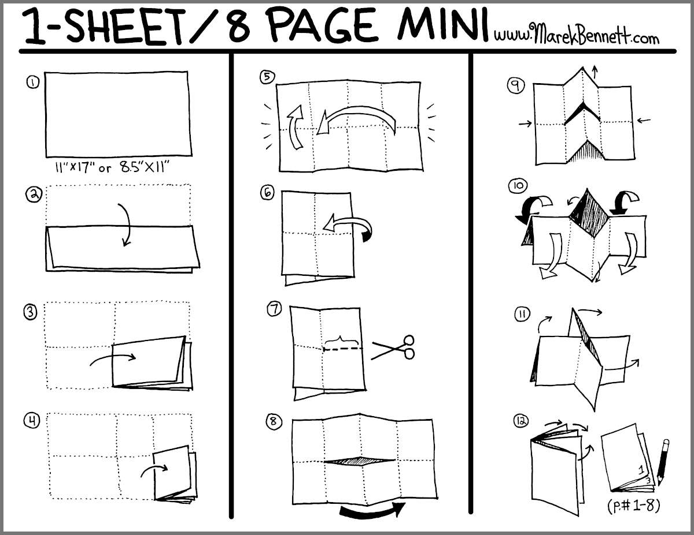

Transform your PDF into an 8-page booklet from one sheet, printed on one side. Print, fold, cut – done!

Folding diagram and technique by Marek Bennett
This tool takes your PDF (up to 8 pages) and rearranges it into a special layout that, when printed on one side and folded, becomes an 8-page booklet from a single sheet of paper. Perfect for zines, mini-comics, poetry chapbooks, or any small publication!
Select a PDF file with 1-8 pages. Each page will become one panel in your mini-zine. If you have fewer than 8 pages, the remaining pages will be blank.
Margin – Controls spacing and sizing:
18) – Adds white space around the edges. Use for safety margins-18) – Makes content bigger by cropping edges. Good for full-bleed or text-heavy pages0) – No margin, content fills each panel exactlyAfter processing, you'll see a single-page PDF. Print settings:
Follow the diagram above to fold and cut your printed sheet into a booklet. The magic happens when you push the folded ends together!
≥0: outer margin, <0: crop & enlarge